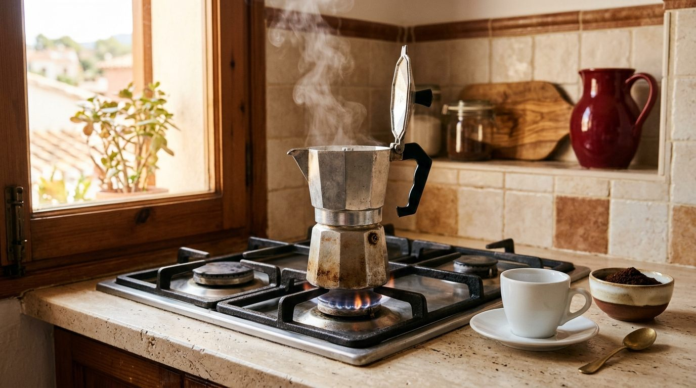
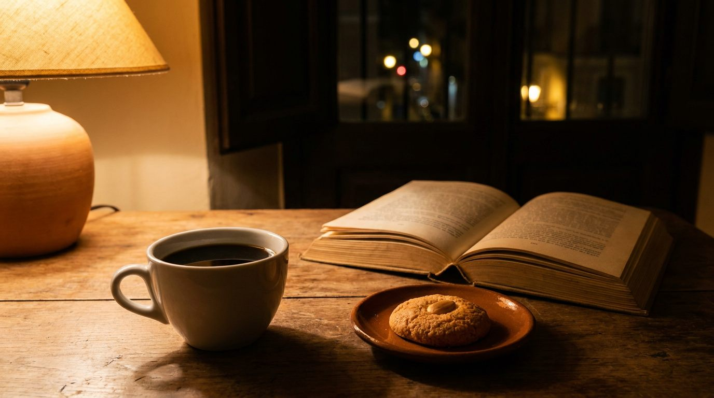

01 Guías y consejos
Cómo empezar en el café de especialidad: primeros pasos
¿Qué método de café te conviene?
- Quiz de 3 preguntas
- Receta paso a paso
- Frescura del café
Inicio / Journal
Guías, historia, cultura y tendencias del café de especialidad, contadas desde Madrid.
Cinco lecturas para empezar. Sigue bajando
01 Guías y consejos
¿Qué método de café te conviene?

02 Historia y orígenes
Se considera que Madrid tuvo su primer café en 1765. El de especialidad llegó más de dos siglos después.

03 Tendencias y actualidad
Una calculadora y cinco señales para saber si el precio tiene sentido.

04 Guías y métodos
Paso a paso, la molienda correcta y un diagnóstico si te sale amargo o aguado.

05 Origen y proceso
Los métodos, lo que dice la ley y un comparador de cafeína.